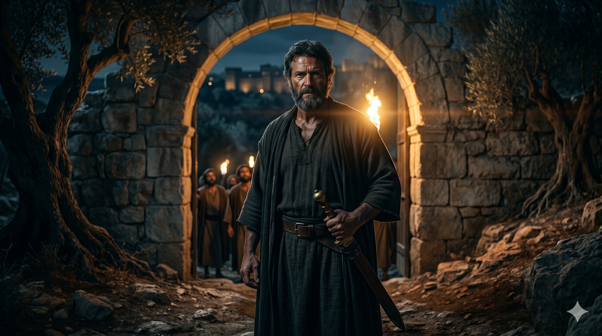

마지막 만찬 후 겟세마네로 향하는 밤길, 횃불 아래 굳게 주먹을 쥐고 앞장서 걷는 베드로의 뒷모습.
베드로가 대답하여 이르되 다 주를 버릴지라도 나는 결코 버리지 않겠나이다. 예수께서 이르시되 내가 진실로 네게 이르노니 오늘 밤 닭 울기 전에 네가 세 번 나를 부인하리라. 베드로가 이르되 내가 주와 함께 죽을지언정 주를 부인하지 않겠나이다 하고 모든 제자도 이와 같이 말하니라. — 마태복음 26:33-35
유월절 만찬이 끝난 밤, 예수께서는 감람산으로 제자들을 이끌고 나가시며 말씀하십니다 — "오늘 밤에 너희가 다 나를 버리리라." 선지자 스가랴의 예언 ("목자를 치리니 양들이 흩어지리라")을 직접 인용하시며 다가오는 일을 담담하게 예고하십니다. 이 자리에서 베드로는 즉각 반응합니다. "다 버릴지라도 나는 결코 버리지 않겠나이다." 이 한 문장 안에 베드로의 성격이 가장 선명하게 드러납니다. 다른 제자들과 자신을 구별하는 자신감, 죽음도 불사하겠다는 뜨거운 충성심, 그리고 아직 자기 자신을 완전히 모르는 한 인간의 솔직한 자기 과신이 동시에 담겨 있습니다.
주님의 대답은 예언이요 동시에 경고였습니다 — "오늘 밤 닭 울기 전에 네가 세 번 나를 부인하리라." 이것은 베드로를 무너뜨리려는 말씀이 아닙니다. 오히려 베드로가 곧 경험하게 될 자기 자신과의 충격적인 만남을 미리 알려 주시는, 사랑 어린 예고입니다. 그러나 베드로는 듣지 않았습니다. "내가 주와 함께 죽을지언정 주를 부인하지 않겠나이다." 이 말은 거짓이 아니었습니다. 베드로는 진심으로 그렇게 믿었습니다. 그러나 믿음의 진정성과, 그 믿음이 극한 상황에서도 흔들리지 않을 수 있다는 자신감은 서로 다른 이야기입니다. 베드로는 자기 믿음의 열심을 자기 의지의 능력으로 착각하고 있었습니다.

겟세마네 동산 입구에서 칼자루를 손에 쥐고 결연히 서 있는 베드로, 그러나 멀리 아직 어둠만 가득한 밤.
우리는 종종 뜨거운 마음의 상태를 믿음의 능력으로 오해합니다. 은혜로운 예배 자리에서, 깊은 감동을 받은 기도 후에 "나는 어떤 상황에서도 흔들리지 않겠다"고 다짐하지만, 막상 예상치 못한 압박과 두려움 앞에 서게 되면 그 다짐이 얼마나 연약했는지를 발견하게 됩니다. 베드로의 실수는 자기 자신을 너무 몰랐다는 데 있습니다. 자기 안의 두려움과 연약함을 직시하지 않고, 열심만으로 모든 것을 이길 수 있다고 믿었습니다. 그 과신이 무너질 때의 충격은 더욱 컸습니다.
그러나 이 말씀은 우리에게 절망을 가르치지 않습니다. 주님은 베드로의 부인을 미리 아시면서도 그를 포기하지 않으셨습니다. 오히려 그 넘어짐이 베드로를 더 깊이 주님께 의존하는 사람으로 만들기 위한 길임을 아셨습니다. 우리도 자신의 한계를 솔직히 인정하고 "나는 주님 없이는 아무것도 아닙니다"라고 고백할 때, 비로소 참된 힘의 근원에 연결됩니다. 자기 과신이 무너지는 자리가, 주님께 온전히 기대는 출발점이 됩니다.
당신의 뜨거운 다짐이 때로는 자기 자신에 대한 과신일 수 있습니다.
넘어지기 전에 스스로를 낮추십시오.
그리고 베드로처럼 넘어진 후에도 — 다시 일어서는 사람이 되십시오.